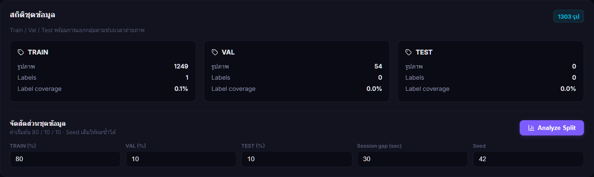
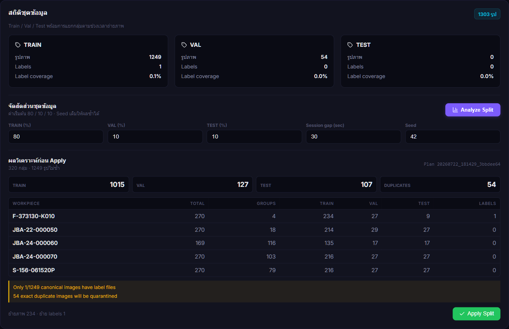
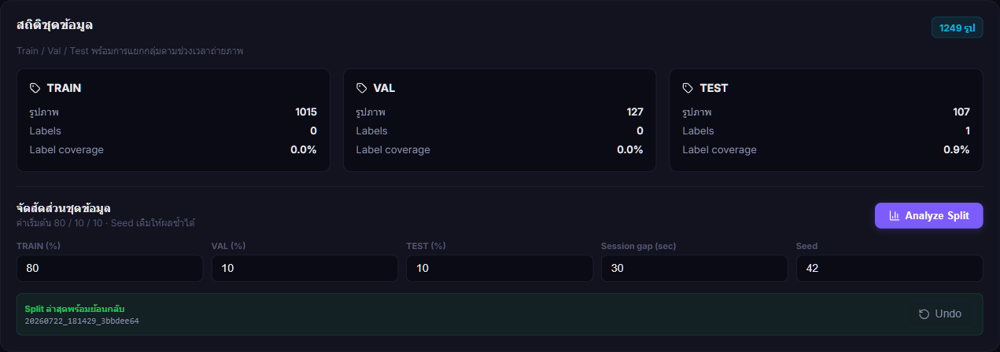
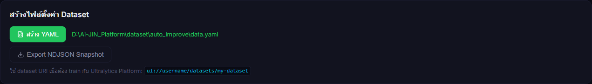
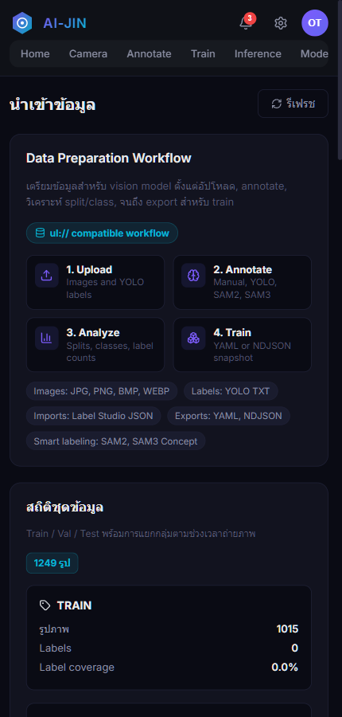

การจัดกลุ่มภาพตามชิ้นงานและช่วงเวลาถ่ายภาพ เพื่อลด data leakage พร้อมระบบ preview, manifest, quarantine และ Undo
D:\Ai-JIN_Platform
Web UI, annotation, dataset, training, inference, models และ API
D:\Ai-JIN_V10.0_patch_output
PyQt5 camera, tracking, counting, PLC และ production runtime
D:\Ai-JIN_Platform\legacy\v10-platform-stack-20260722
เก็บ Platform เดิมที่ย้ายออกจาก App AI Camera เพื่ออ้างอิงและย้อนตรวจ ไม่ใช่ runtime หลัก
http://localhost:8501/import
ภาพจริงที่ 1 - สถิติ Train / Val / Test และชุดควบคุม Analyze Split
| ค่า | แนะนำ | ความหมาย |
|---|---|---|
| Train / Val / Test | 80 / 10 / 10 | รวมกันต้องเท่ากับ 100% |
| Session gap | 30 sec | ช่วงสูงสุดที่ภาพ workpiece เดียวกันยังเป็นกลุ่มเดียวกัน |
| Seed | 42 | ทำให้การจัดกลุ่มซ้ำได้ผลเดิม |

ภาพจริงที่ 2 - Preview แสดง proposed totals, groups, file moves และคำเตือน
ภาพไม่ซ้ำที่ถูกนำไปจัด split
ภาพซ้ำที่ย้ายไป quarantine โดยไม่ลบทิ้ง
กลุ่มภาพต่อเนื่องที่จะไม่ถูกแยกข้าม split
จำนวน image/label ที่แผนจะย้ายจริง
ตรวจตาราง workpiece และคำเตือนแล้วกด Apply Split จากนั้นยืนยันจำนวนไฟล์ ระบบจะตรวจ SHA และตำแหน่งต้นทางซ้ำก่อนย้ายจริง

ภาพจริงที่ 3 - สถานะหลัง Apply พร้อม manifest และปุ่ม Undo
20260722_181429_3bbdee64

ภาพจริงที่ 4 - ยืนยัน data.yaml ใน runtime path ของ Platform
D:\Ai-JIN_Platform\dataset\auto_improve\data.yaml
| Dataset | D:\Ai-JIN_Platform\dataset |
| Training runs | D:\Ai-JIN_Platform\runs |
| Models | D:\Ai-JIN_Platform\models |
dataset\auto_improve\split_manifests
บันทึกต้นทาง ปลายทาง SHA และสถานะ transaction
dataset\auto_improve\split_quarantine\<manifest_id>
เก็บ exact duplicates เพื่อให้ตรวจสอบหรือ Undo ได้
| เหตุการณ์ | พฤติกรรมระบบ |
|---|---|
| Dataset เปลี่ยนหลัง Preview | หยุด Apply และตอบ 409 stale plan |
| ปลายทางมีไฟล์ชื่อเดียวกัน | หยุดก่อนเขียนทับและรายงาน conflict |
| SHA ต้นทางไม่ตรง | หยุด transaction เพื่อรักษาไฟล์เดิม |
| ย้ายบางส่วนแล้วเกิดข้อผิดพลาด | ใช้ operation log เพื่อ rollback |
หน้า Import ใช้เต็มความกว้าง แถบนำทางด้านบนเลื่อนในแนวนอนได้ และซ่อน sidebar บนหน้าจอแคบ

ภาพจริงที่ 5 - Chrome 430 x 900
แนะนำใช้จอเดสก์ท็อปเมื่อ Apply หรือ Undo เพื่ออ่านตาราง workpiece และคำเตือนได้ครบถ้วน
| อาการ | แนวทางแก้ไข |
|---|---|
| 400 Bad Request | ตั้ง Train + Val + Test ให้รวม 100 และทุกค่ามากกว่า 0 |
| 409 Conflict | Dataset เปลี่ยนหลัง Analyze ให้รีเฟรชและ Analyze ใหม่ |
| 500 Internal Server Error | ตรวจ Platform log, path และ permission โดย path ต้องอยู่ใต้ D:\Ai-JIN_Platform |
| Apply ไม่สำเร็จ | ปิดโปรแกรมที่ล็อกไฟล์ แล้ว Analyze ใหม่ |
| YAML มี nc = 0 | ตรวจชื่อ workpiece folders/filenames แล้วสร้าง YAML ใหม่ |
| Train ไม่มี label | Annotate และตรวจ label ก่อนเริ่ม Train |
| Method | Endpoint | หน้าที่ |
|---|---|---|
| GET | /api/import/split-info | สถิติ dataset |
| POST | /api/import/split/preview | สร้างแผนโดยไม่ย้ายไฟล์ |
| POST | /api/import/split/apply | ตรวจ preflight และ Apply |
| GET | /api/import/split/latest | อ่าน manifest ล่าสุด |
| POST | /api/import/split/undo | ย้อนกลับ manifest |
| POST | /api/import/generate-yaml | สร้าง data.yaml |
/import ถูกระบบ| Dataset canonical images | 1,249 |
| Split result | 1,015 / 127 / 107 |
| Cross-split duplicate SHA | 0 |
| Capture-group leakage | 0 |
| Browser console | 0 errors / 0 warnings |
| Train readiness | ไม่ผ่าน - ต้อง annotate เพิ่ม |
เอกสารอ้างอิง: docs/platform-boundary.md
คู่มือฉบับแก้ไข: docs/manual/Ai-JIN-Platform-Dataset-Split-Guide-TH.md